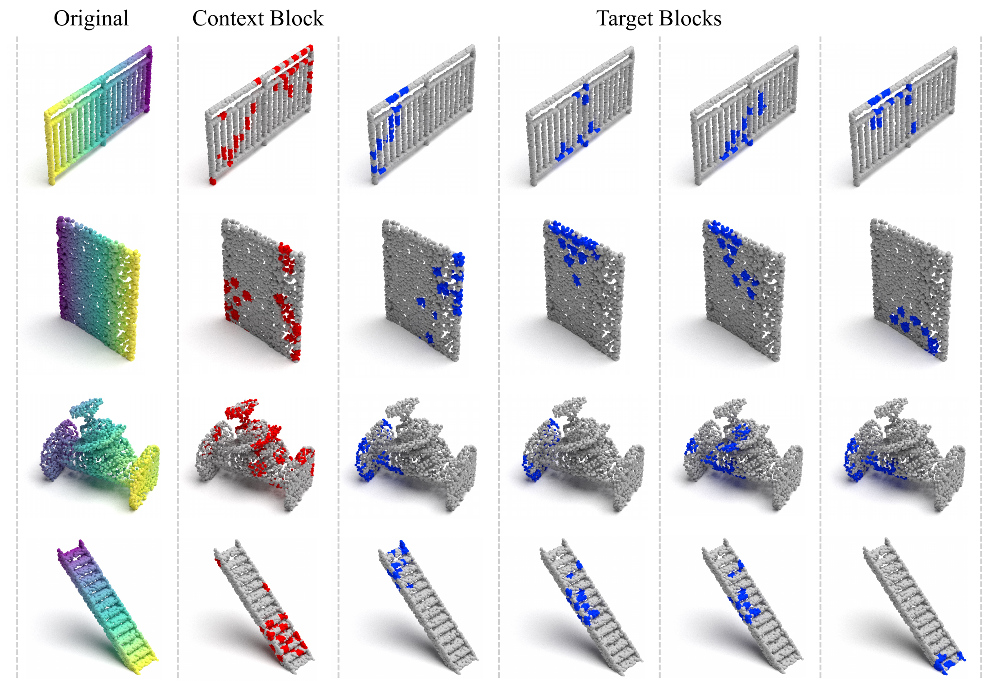
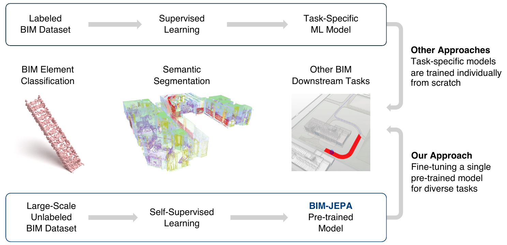

Fig. 4. Visualization of the context blocks and target blocks of various BIM elements. For each training sample, the ratio range for the target block is 0.15 to 0.2, while the ratio range for the context block is 0.4 to 0.75. The indices of patch embeddings chosen for the context differ from those for the targets to avoid trivial solutions.

Fig. 10. PCA visualization of learned representations from various models. Top row starting from left: a) prelogits from DGCNN, b) MeshNet, and c) MVCNN respectively. Bottom row starting from left: d) context encoder from pre-trained BIM-JEPA, e) context encoder from fine-tuned BIM-JEPA, and f) prelogits from fine-tuned BIM-JEPA.
